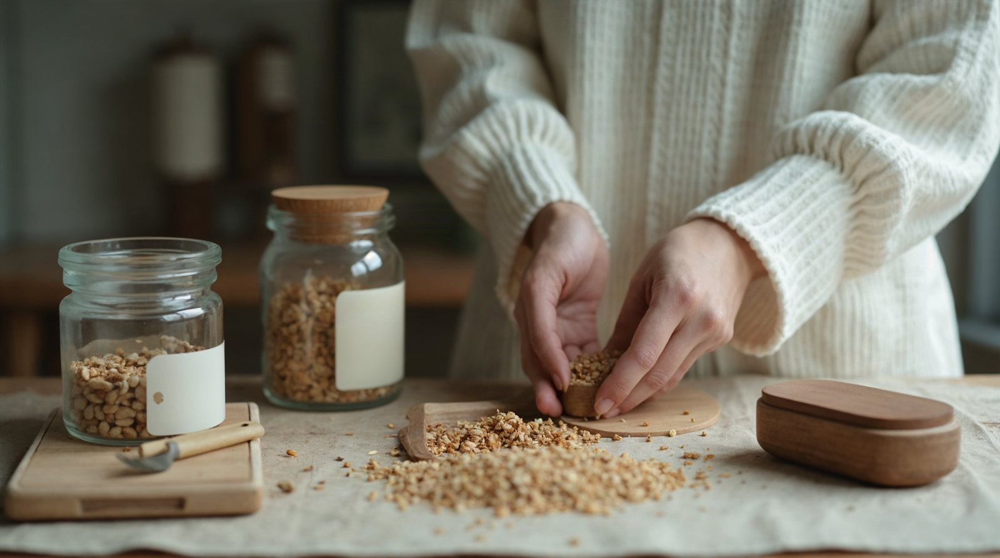
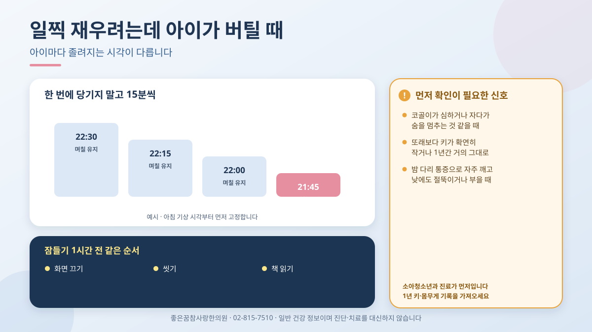

이종호 한의사 감수좋은꿈참사랑한의원 대표원장 (한의사 면허번호 19769)발행 2026-11-24 · 수정 2026-11-26
이 글의 차례
- 왜 이런 불편이 생길 수 있나요
- 왜 일찍 눕힐수록 아이가 더 버티는 걸까요?
- 키와 잠, 어디까지 알려져 있나요?
- 아이 잠이 충분한지는 어떻게 알 수 있나요?
- 먼저 이렇게 여쭙니다
- 일상에서 먼저 해 볼 수 있는 것
- 2주 동안 잠드는 시각 당기기, 이렇게 해 보세요
- 잠자리 실랑이를 줄이는 말과 순서
- 낮잠과 주말은 어떻게 다루면 좋을까요?
- 형제자매가 한방에서 잘 때는 어떻게 할까요?
- 상황별 예시
- 스스로 점검해 보세요
- 한의원에서 함께 살필 수 있는 경우
- 첫 방문에서는 이렇게 진행합니다
- 얼마나 지켜보고 언제 상담할까요
- 이렇게 기록해 오시면 상담이 쉬워집니다
- 이런 증상은 먼저 확인이 필요합니다
- 함께 읽으면 좋은 글
잠드는 시각을 한 번에 당기기보다 아침 기상 시각을 먼저 고정하고 며칠마다 15분씩 앞당기는 것이 아이에게 무리가 적습니다.
장승배기나 상도동, 흑석동에서 아이를 키우는 부모님들께서 키 걱정 때문에 9시에는 재우려는데 아이가 11시가 넘어야 잠든다고 걱정하시는 경우가 있고, 재우려고 애쓸수록 잠자리가 실랑이 시간이 되어 부모와 아이 모두 지치기도 합니다.
잠은 억지로 들게 할 수 있는 것이 아니라 졸음이 찾아올 조건을 만들어 주는 것에 가깝습니다. 그래서 저는 몇 시에 눕히느냐보다 아이의 하루가 몇 시에 시작되고, 저녁이 어떻게 흘러가는지를 먼저 함께 살펴보시기를 권합니다.
왜 이런 불편이 생길 수 있나요
- 아이마다 필요한 잠의 양과 졸려지는 시각이 달라, 졸리지 않은 시각에 눕히면 오히려 잠들기까지 오래 걸릴 수 있습니다.
- 저녁 늦게까지 학원이나 활동이 이어지거나 화면을 보면 몸과 머리가 깨어 있는 상태가 길어집니다.
- 주말 늦잠과 낮잠은 평일 밤 잠드는 시각을 뒤로 미루기도 합니다.
- 낮에 몸을 움직이는 시간이 적으면 밤에 졸린 느낌이 약할 수 있습니다.
- 늦은 저녁 식사나 잠들기 직전의 간식은 속을 불편하게 해 잠들기까지 시간이 길어지기도 합니다.
- 일찍 자야 한다는 보호자의 긴장이 아이에게 전해져, 잠자리가 편하게 쉬는 곳이 아니라 버텨야 하는 곳처럼 느껴지는 경우도 있습니다.
왜 일찍 눕힐수록 아이가 더 버티는 걸까요?
평소 잠드는 시각 바로 앞 한두 시간은 하루 중 오히려 정신이 또렷해지는 때라는 이야기가 알려져 있습니다. 늘 11시에 잠드는 아이를 갑자기 9시에 눕히면, 몸은 아직 깨어 있을 시간이라고 느껴 뒤척이게 되는 것입니다.
졸음은 깨어 있는 시간이 길어질수록 차곡차곡 쌓입니다. 아침에 늦게 일어난 날은 밤에 쌓인 졸음이 적어 일찍 눕혀도 잠이 오지 않습니다. 그래서 잠드는 시각을 당기고 싶다면 아침 기상 시각을 먼저 당기는 것이 순서입니다.
잠이 안 오는데 오래 누워 있으면 아이는 지루함을 견디려 말을 걸거나 물을 찾고, 보호자는 점점 목소리가 높아집니다. 이런 밤이 반복되면 아이에게 잠자리가 혼나는 자리로 기억되어 다음 날 밤에도 쉽게 긴장하게 됩니다.
키와 잠, 어디까지 알려져 있나요?
깊은 잠이 이어지는 밤사이에 성장과 관련된 호르몬이 많이 나온다는 이야기는 널리 알려져 있습니다. 그래서 잠을 충분히, 규칙적으로 자는 것은 자라는 아이에게 중요한 생활 습관 가운데 하나입니다.
다만 키는 부모의 체격, 영양, 사춘기가 오는 시기, 활동량처럼 여러 가지가 함께 영향을 줍니다. 몇 시에 잠드느냐 한 가지로 키가 정해지지는 않아서, 9시를 지키지 못했다고 너무 걱정하지 않으셔도 됩니다.
제가 보호자분께 권하는 것은 정해진 시각보다 '아이에게 필요한 만큼, 매일 비슷한 시각에' 자는 습관입니다. 그 습관이 자리 잡으면 잠드는 시각도 자연스럽게 조금씩 앞당겨지는 경우가 많습니다.
아이 잠이 충분한지는 어떻게 알 수 있나요?
아이마다 필요한 잠의 양이 달라서 시간 숫자만으로 판단하기는 어렵습니다. 그보다 아침과 낮의 모습을 보면 잠이 충분한지 짐작해 볼 수 있습니다.
- 깨우지 않아도 정해진 시각 무렵 스스로 일어나는 날이 많은가
- 아침에 깨운 뒤 30분 안에 기분이 풀리고 아침밥을 먹는가
- 오후에 유난히 짜증이 늘거나 멍하게 있는 일이 잦지는 않은가
- 학교나 학원에서 졸았다는 이야기를 자주 듣지는 않는가
아침마다 깨우기 어렵고 오후에 짜증이 는다면 잠이 부족할 가능성이 있습니다. 반대로 낮에 잘 지내는데 밤에만 늦게 잠든다면 잠의 양보다 시각의 문제일 수 있어 접근이 조금 달라집니다.
먼저 이렇게 여쭙니다
- 아이는 지금 보통 몇 시에 잠들고 몇 시에 일어나나요?
- 학원이나 방과 후 활동이 끝나는 시각과 저녁 식사 시각은 언제인가요?
- 잠들기 전 1시간 동안 스마트폰이나 태블릿을 보나요?
- 주말에는 늦잠을 자나요? 낮잠을 자나요?
- 잠자리에서 보호자와 실랑이하는 시간이 보통 얼마나 되나요?
- 코를 골거나 입을 벌리고 자는 모습, 자다가 자주 깨는 모습이 있나요?
- 아침에 깨우면 바로 일어나나요, 한참 걸리나요?
일상에서 먼저 해 볼 수 있는 것
- 잠드는 시각을 한 번에 당기기보다 며칠마다 15분씩 앞당기기
- 아침에 일어나는 시각부터 일정하게 고정하기
- 잠들기 1시간 전에는 화면을 끄고 씻기, 책 읽기처럼 같은 순서 반복하기
- 낮에 밖에서 몸을 움직이는 시간 만들기
- 저녁 식사는 잠들기 2~3시간 전까지 마치고, 잠들기 직전 간식은 피하기
- 잠자리 조명은 은은하게 낮추고, 방은 조금 서늘하게 두기
- "빨리 자" 대신 "이제 책 한 권 읽고 불 끄자"처럼 순서를 알려 주는 말로 바꾸기
2주 동안 잠드는 시각 당기기, 이렇게 해 보세요
- 1~3일째: 지금 잠드는 시각과 일어나는 시각을 그대로 적기만 합니다. 기준을 알아야 계획이 섭니다.
- 4~6일째: 아침 기상 시각을 15분 당기고, 일어나면 커튼을 열어 햇빛을 보게 합니다.
- 7~9일째: 잠자리에 드는 시각을 15분 당기고, 잠들기 1시간 전 화면 끄기를 시작합니다.
- 10~14일째: 잘 지켜졌다면 다시 15분씩 당기고, 주말에도 기상 시각을 1시간 안쪽으로 맞춥니다.
중간에 잠드는 데 30분 넘게 걸리는 날이 이어지면 그 단계에서 며칠 더 머물러도 괜찮습니다. 천천히 당겨야 아이도 보호자도 덜 지칩니다.
잠자리 실랑이를 줄이는 말과 순서
잠자리 실랑이는 아이가 말을 안 들어서라기보다 다음에 무엇을 해야 할지 예측하기 어려울 때 커지는 경우가 많습니다. 매일 같은 순서를 반복하면 아이는 순서를 따라가며 자연스럽게 잠잘 준비를 합니다.
예를 들어 '씻기, 잠옷 입기, 양치, 책 한 권, 불 끄기'처럼 순서를 그림이나 스티커로 만들어 벽에 붙여 두는 방법이 있습니다. 아이가 스스로 하나씩 떼어 가며 따라가게 하면 보호자가 재촉하는 말이 줄어듭니다.
불을 끈 뒤에는 오늘 좋았던 일 하나를 이야기하거나, 조용한 목소리로 짧게 대화하고 마무리해 보세요. 혼내는 말로 하루를 끝내지 않는 것만으로도 잠자리 분위기가 한결 부드러워집니다.
낮잠과 주말은 어떻게 다루면 좋을까요?
유치원이나 초등 저학년 아이 가운데는 오후에 차나 소파에서 깜빡 잠드는 경우가 있습니다. 오후 4시 이후의 낮잠은 밤에 쌓일 졸음을 미리 써 버려서, 그날 밤 잠드는 시각이 늦어지기 쉽습니다.
아이가 오후 늦게 졸려 한다면 잠깐 밖에 나가 걷거나 창문을 열어 바람을 쐬게 해 보세요. 낮잠이 꼭 필요한 나이라면 점심 무렵에 짧게 재우고, 늦은 오후에는 깨워 두는 것이 좋습니다.
주말에는 늦잠보다 오전에 밖에서 보내는 시간을 늘려 보시기를 권합니다. 놀이터나 공원에서 햇빛을 보며 뛰어놀면 그날 밤 졸음이 제때 찾아오고, 월요일 아침도 한결 수월해집니다.
형제자매가 한방에서 잘 때는 어떻게 할까요?
나이가 다른 형제가 한방에서 자면 동생은 일찍 졸린데 형이나 누나가 늦게까지 불을 켜 두어 함께 늦게 잠드는 경우가 많습니다. 이럴 때는 동생이 먼저 잠자리에 들고, 큰아이는 거실에서 조용히 책을 읽다가 정해진 시각에 들어가는 식으로 순서를 나눠 보세요.
함께 누워 이야기를 나누다 잠이 달아나는 형제도 있습니다. 불을 끈 뒤에는 이야기 시간 5분만 정해 두고, 그 뒤에는 조용히 눈을 감기로 아이들과 함께 약속해 보시기를 권합니다.
상황별 예시
- 예를 들어 초등학생 아이가 학원을 마치고 저녁 8시에 저녁을 먹고, 숙제를 마친 뒤 10시 반이 넘어야 잠드는 경우에는 숙제 순서를 학원 가기 전으로 옮길 수 있는지, 저녁 식사를 조금 당길 수 있는지 함께 살펴봅니다.
- 예를 들어 평일에는 7시에 깨우는데 주말에는 10시까지 자게 두어 일요일 밤마다 잠들기 어려워하는 경우에는 주말 기상 시각을 8시 전후로 맞추고, 오전에 밖에서 노는 시간을 두는 방법을 이야기합니다.
- 예를 들어 맞벌이로 보호자 퇴근이 늦어 밤 9시가 넘어서야 아이와 노는 시간이 생기는 경우에는 그 시간을 몸을 크게 쓰는 놀이 대신 책 읽기나 대화처럼 차분한 놀이로 바꾸고, 주말에 몸을 쓰는 시간을 넉넉히 두는 방법을 함께 찾습니다.
스스로 점검해 보세요
- 잠자리에 누운 뒤 잠들기까지 30분 넘게 걸리는 날이 일주일에 사흘 이상이다
- 주말 기상 시각이 평일보다 2시간 넘게 늦다
- 잠들기 1시간 안에 스마트폰이나 태블릿을 본다
- 저녁 식사가 잠들기 2시간 안쪽으로 늦어지는 날이 많다
- 낮에 밖에서 뛰어노는 시간이 거의 없다
- 잠자리에서 혼내거나 다투는 날이 자주 있다
- 아침마다 깨우는 데 10분 넘게 걸린다
해당하는 항목이 많다면 잠드는 시각을 당기기 전에 아침 기상 시각과 저녁 순서부터 하나씩 맞춰 보세요.

한의원에서 함께 살필 수 있는 경우
- 잠드는 데 오래 걸리고 자주 깨는 상태가 이어지는 경우 아이의 잠의 모양과 생활 리듬을 함께 살핍니다.
- 입맛이 적고 저녁을 늦게 먹는 경우 식사 시각과 소화를 함께 살핍니다.
- 또래보다 키가 작아 걱정되는 경우 성장 기록과 잠·식사 습관을 함께 여쭙고, 필요하면 소아청소년과 검사를 안내합니다.
좋은꿈참사랑한의원에서는 아이도 보호자와 함께한 자리에서 맥을 짚으며, 아이 눈높이에 맞춰 아이와 보호자께 잠과 식사, 생활을 천천히 여쭙습니다. 필요하다고 판단될 때는 설진을 더해 살핍니다. 아이에게 맞는 방법을 보호자와 함께 정하고, 소아청소년과 확인이 먼저 필요한 경우에는 함께 안내합니다.
첫 방문에서는 이렇게 진행합니다
처음 오시면 아이의 평일 하루를 아침부터 잠들 때까지 순서대로 들려 달라고 부탁드립니다. 학원 시간, 저녁 식사, 숙제, 화면을 보는 시간, 잠자리에 드는 시각이 나란히 놓이면 어디서 저녁이 길어지는지가 보입니다.
아이와는 맥을 짚으며 짧고 쉬운 말로 이야기를 나눕니다. 아이가 낯설어하면 보호자 무릎에 앉거나 손을 잡은 채로 진행해도 괜찮고, 아이가 편해질 때까지 천천히 기다립니다.
이야기를 마치면 2주 동안 해 볼 기상 시각과 잠자리 순서를 보호자와 함께 정하고, 키와 몸무게 기록을 어떻게 이어 갈지도 알려 드립니다. 성장 검사가 필요해 보이면 소아청소년과 확인을 먼저 권해 드립니다.
얼마나 지켜보고 언제 상담할까요
- 기상 시각을 고정하고 2~3주 동안 15분씩 당겨 보며 잠드는 시각과 아침 모습을 적어 보세요.
- 3~4주가 지나도 잠들기까지 1시간 가까이 걸리는 날이 이어지거나, 자다가 자주 깨서 낮에 힘들어한다면 상담을 받아 보시기를 권합니다.
- 키 걱정이 크다면 잠 습관과 별개로 학교 검진이나 소아청소년과에서 성장 기록을 먼저 확인해 두시면 이야기를 나누기가 수월합니다.
이렇게 기록해 오시면 상담이 쉬워집니다
- 일주일 동안 아이가 잠든 시각과 일어난 시각
- 저녁 식사 시각과 잠들기 전 1시간 동안 한 일
- 코골이, 입 벌리고 자기, 자다 깨는 횟수
- 최근 1년의 키와 몸무게 기록(학교 검진 결과도 좋습니다)
- 잠자리에 든 시각과 실제로 잠든 시각의 차이
- 낮잠 여부와 시각, 주말 기상 시각
이런 증상은 먼저 확인이 필요합니다
- 코골이가 심하거나 자다가 숨을 멈추는 것처럼 보이는 경우
- 또래보다 키가 확연히 작거나 1년 동안 키가 거의 자라지 않은 경우
이런 신호가 있으면 한의원보다 가까운 병원이나 응급실을 먼저 찾으세요.
함께 읽으면 좋은 글
- 아이가 잠투정이 심하고 자다가 자주 깰 때는 어떤 점을 살펴보나요?
- 아이 키가 작은 것 같을 때 한의원에서는 무엇을 먼저 확인하나요?
- 아이가 코를 골고 입을 벌리고 자는데 아데노이드가 크다는 말을 들었을 때는 어떻게 살피나요?

여쭙는 것
- 아이는 지금 보통 몇 시에 잠들고 몇 시에 일어나나요?
- 학원이나 방과 후 활동이 끝나는 시각과 저녁 식사 시각은 언제인가요?
- 잠들기 전 1시간 동안 스마트폰이나 태블릿을 보나요?
생활에서 해 볼 것
- 잠드는 시각을 한 번에 당기기보다 며칠마다 15분씩 앞당기기
- 아침에 일어나는 시각부터 일정하게 고정하기
- 잠들기 1시간 전에는 화면을 끄고 씻기, 책 읽기처럼 같은 순서 반복하기
한의원에서 함께 살필 것
- 잠드는 데 오래 걸리고 자주 깨는 상태가 이어지는 경우 아이의 잠의 모양과 생활 리…
- 입맛이 적고 저녁을 늦게 먹는 경우 식사 시각과 소화를 함께 살핍니다.
- 또래보다 키가 작아 걱정되는 경우 성장 기록과 잠·식사 습관을 함께 여쭙고, 필요하…
먼저 확인이 필요한 신호
- 코골이가 심하거나 자다가 숨을 멈추는 것처럼 보이는 경우
- 또래보다 키가 확연히 작거나 1년 동안 키가 거의 자라지 않은 경우
한눈에 보는 표
| 구분 | 핵심 |
|---|---|
| 여쭙는 것 | 아이는 지금 보통 몇 시에 잠들고 몇 시에 일어나나요? 학원이나 방과 후 활동이 끝나는 시각과 저녁 식사 시각은 언제인가요? |
| 생활에서 해 볼 것 | 잠드는 시각을 한 번에 당기기보다 며칠마다 15분씩 앞당기기 아침에 일어나는 시각부터 일정하게 고정하기 |
| 한의원에서 함께 살필 것 | 잠드는 데 오래 걸리고 자주 깨는 상태가 이어지는 경우 아이의 잠의 모양과 생활 리듬을 함께 살핍니다. 입맛이 적고 저녁을 늦게 먹는 경우 식사 시각과 소화를 함께 살핍니다. |
| 먼저 확인이 필요한 신호 | 코골이가 심하거나 자다가 숨을 멈추는 것처럼 보이는 경우 또래보다 키가 확연히 작거나 1년 동안 키가 거의 자라지 않은 경우 |
자주 묻는 질문
몇 시에 재워야 키가 크나요?
잠드는 시각 하나로 키가 정해지지는 않습니다. 아이에게 필요한 잠의 양과 생활 리듬은 저마다 달라, 일정한 시각에 자고 일어나는 습관을 먼저 함께 만듭니다.
주말에 늦잠을 자게 둬도 되나요?
주말 늦잠이 길어지면 일요일 밤 잠들기가 어려워질 수 있어 평일과 1시간 이내 차이로 맞추는 것을 권합니다.
잠들 때까지 옆에 있어 줘야 하나요?
아이가 불안해한다면 처음에는 곁에 있어 주되 조금씩 거리를 두는 방법도 있습니다. 아이의 성향에 맞는 방법을 진료 때 함께 이야기 나눕니다.
진료 시간은 어떻게 되나요?
좋은꿈참사랑한의원은 평일 09:30~20:00(점심 13:00~14:00), 토·일·공휴일 09:30~15:00에 진료합니다.
좋은꿈참사랑한의원은 재진 때 지난번 이야기부터 이어서 여쭙니다. 진료시간과 예약은 오시는 길에서 확인하세요.
어디서 상담받을 수 있나요?
좋은꿈참사랑한의원은 서울 동작구 만양로2길 2 신성빌딩 3층·5층(서울 동작구 상도동, 7호선 상도역 3번 출구 근처)에 있습니다. 한의사 3명(이종호 대표원장, 조영기 수석진료원장, 정원영 진료원장)이 진료합니다. 진료시간은 평일 09:30~20:00(점심 13:00~14:00), 토·일·공휴일 09:30~15:00이며, 방문 전 전화로 확인을 권합니다. 예약은 네이버 예약, 카카오톡 상담, 전화 02-815-7510로 받습니다.
이 글은 일반적인 건강 정보이며 개인의 진단이나 치료를 대신하지 않습니다. 증상이 있거나 복용 중인 약이 있다면 진료를 통해 확인하세요. 치료 효과는 개인마다 다를 수 있습니다.
작성 기준: 일반적으로 알려져 있는 건강 정보를 참고해 정리했습니다(대표원장 감수). 증상 기록은 1~2주 동안 하루 1회, 비슷한 시간에 적어 오시면 지난 상태와 비교하기 쉽습니다.